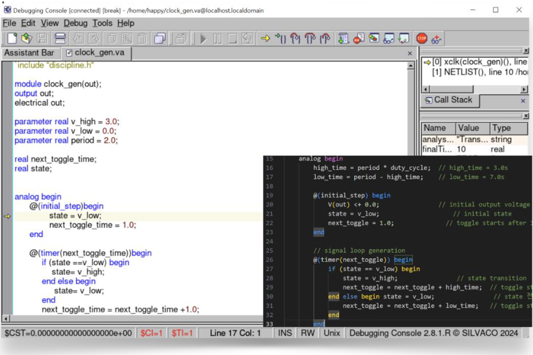
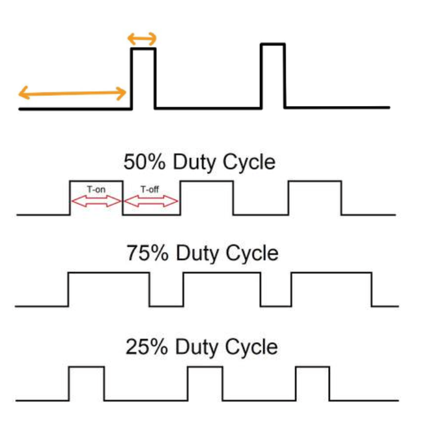
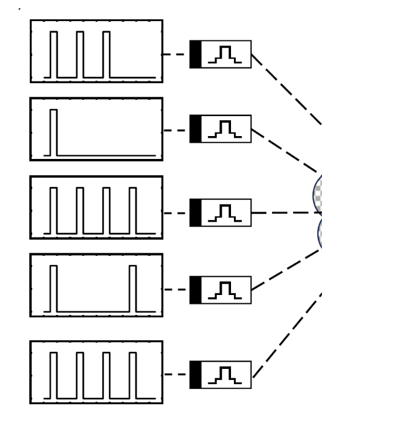
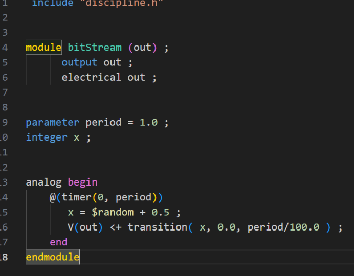

Verilog-A Clocking Signal Driver
I designed a reusable Verilog-A clock/pulse driver for RRAM array for AI semiconductor research,
integrated it with SmartSpice via Gateway, and documented key
troubleshooting & debugging steps (imports, control-file linkage, symbolization).


-
Goal
Generate clean, parameterized square waves (VH, VL, freq, duty) to drive WL/BL/SL and stop or adapt based on measured conductance.
-
Method (Brief)
Verilog-A clock block → Gateway import/embedding → SmartSpice control-file binding → symbol hookup → waveform verify (SmartView) & console debug.
-
Design Highlights
• Duty-cycle–based clocking; fixed magnitude/width options for sweeps.
 •@timer-style scheduling and transient timing control for repeatable toggles.
 • PWL fallback for corner cases; parameter guards to avoid meta-stability.
• “Stop-on-target” logic (write/verify loop ready) when conductance meets threshold. -
EDA Integration (Gateway & SmartSpice)
• Verilog-A import paths tried as: (1) direct import (symbol), (2) embedded definition, (3) control-file (
.ctr) include.
• Early attempt of method (3): output voltage not observable → fixed by netlisting order and symbol pin-mapping; method (2) proved most robust in large arrays.
• Common pitfalls:.include/.verilog/.hdlheader mix-ups, library scope, and control-file search paths. -
Troubleshooting Checklist
1) Ensure
.vacompiled before symbol instantiation; 2) verify pin order and units; 3) set initial conditions to avoid DC-op traps; 4) confirm viewer probes on the driver output node; 5) when duty<→write time matters, sweep duty first (frequency often secondary within the safe Vwrite window). -
Results
• Clean 50–80% duty clocks for WL/BL/SL; stable toggling across PVT corners.
• Resolved “no-output” cases and reduced bring-up time; ready for write-verify automation.
• Scales to large arrays when embedded; control-file method works with corrected includes. -
Next
• Add programmable burst/idle patterns; • expose API for testbenches; • ship as a lab “clock IP” cell.
Tech Stack: SmartSpice (Silvaco), Gateway, Verilog-A, PWL, SmartView
Links: ← Back to Home